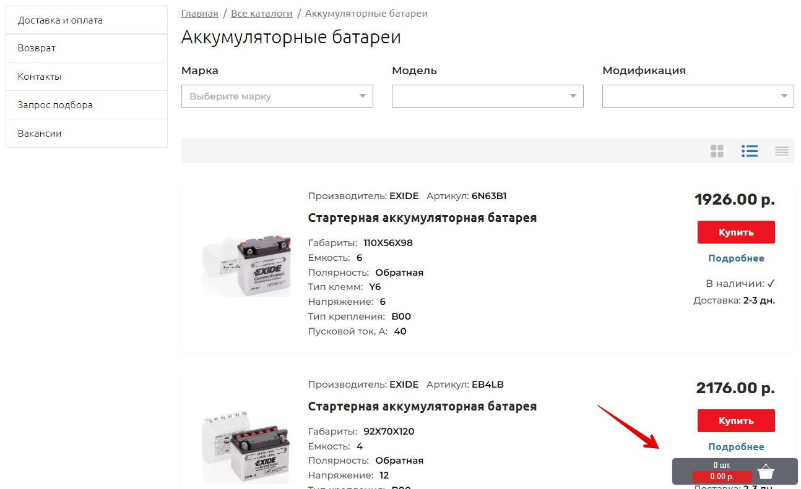
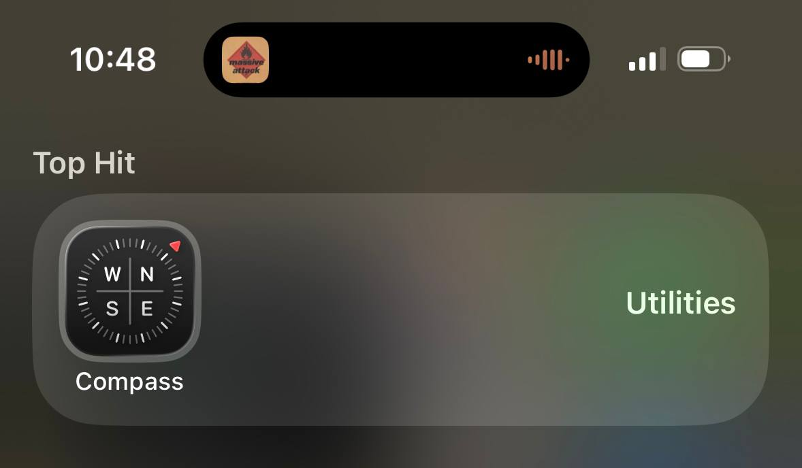

2. Dopasowanie systemu do świata rzeczywistego
EN: Match between system and the real world. The design should speak the users' language. Use words, phrases, and concepts familiar to the user, rather than internal jargon. Follow real-world conventions, making information appear in a natural and logical order.
PL: System powinien mówić językiem użytkownika. Należy używać słów, fraz i pojęć znanych odbiorcy, unikając technicznego żargonu. Informacje powinny być prezentowane w naturalnej i logicznej kolejności, zgodnie z konwencjami świata rzeczywistego.
Przykład 1: Strona Internetowa (Desktop)

Uzasadnienie: Użycie ikony koszyka w sklepie internetowym nawiązuje do fizycznego obiektu znanego z zakupów stacjonarnych, co sprawia, że funkcja dodawania produktów jest intuicyjna.
Przykład 2: Aplikacja Mobilna

Uzasadnienie: Interfejs aplikacji kompasu naśladuje wygląd fizycznego urządzenia (igła, tarcza), dzięki czemu użytkownik od razu wie, jak interpretować wskazywane dane.